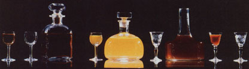

Luscious liquers-for cold-weather sipping or gourmet cooking-are easy to make at home!
Amaretto, Kahlua, Strega, Drambuie, and other costly imported liqueurs have enjoyed a tremendous popularity in recent years. Folks have discovered that-aside from their use in cocktails and as afterdinner drinks-such elixirs can turn ordinary dishes into fine cuisine (and that a dollop of one of the heady beverages in a cup of hot coffee can guarantee a warm, comfortable conclusion to a cold day of ice fishing or woodcutting or cross-country skiing).
Surprisingly, the budget-breaking connoisseur cordials are quite simple-and comparatively inexpensive-to prepare at home, because infusion (the steeping of ingredients in an alcohol base) is the primary method employed in the art of making liqueurs.
Such preparation doesn't require much in the way of special technical know-how .. . or equipment: An aspiring alchemist needs only measuring cups and spoons, a good-sized saucepan, a funnel, some cheesecloth, and a supply of empty bottles (wine, liquor, etc.) that can be securely corked or sealed.
Homemade liqueurs are grouped into two basic types, according to whether the sweetening ingredient is added before or after the infusion period. Most recipes call for sugar, but honey can be substituted in many instances. In fact, the special "character" of some liqueurs, such as Irish Mist and Drambuie, can be directly traced to the distinctive flavor of the natural sweetener.
Clover honey is generally considered ideal for cordial preparation, as its mild flavor won't overpower the other ingredients. The major disadvantage of using honey is that your finished product may have a somewhat cloudy appearance. This can be corrected, however, by carefully siphoning the liquid into a clean bottle after the sediment has had time to settle to the bottom. (If you're interested in "growin' your own" honey for your, homemade liqueurs, check out the article beginning on page 78!)
COFFEE LIQUEUR
I began my cordial-making career with a recipe for a coffee liqueur. When vodka is used as the base spirit, this drink will turn out much like Mexican Kahlua . . . and if you substitute dark rum for the vodka, it will taste more like Jamaican Tia Maria. (Try serving the beverage over ice cream for a great new twist on the conventional sundae!)
For either version, boil 1 cup of water in a saucepan . . . gradually pour in 2 cups of sugar . . . and stir the boiling mixture until the sweetener dissolves and the syrup is clear. Add 2 ounces of instant espresso coffee powder (or you could use 1 cup of very strong brewed espresso-or other dark roast coffee-instead of water as the liquid in the sugar syrup) and mix the ingredients thoroughly. Remove the pan from the heat . . . allow it to become cool to the touch ... and stir in 1 pint of 80-proof vodka or rum.
Now, place 1/2 of a vanilla bean (found in the grocery's spice section) in each of two bottles. Funnel in the mixture and allow the brew to stand for three weeks in a cool, dark cupboard. After the waiting period has elapsed, shake each bottle to loosen any sediment, and strain the liquid-through a funnel lined with cheesecloth-into clean bottles that, again, contain your recycled vanilla bean halves.
GOLDEN HERBAL LIQUEUR
Legend has it that Italian Strega was first created by three beautiful witches . . . and that lovers who share the magical potion will never be parted.
Preparing a similar beverage involves sweetening the brew after its rest period, and requires angelica root, an herb that may prove difficult to find (though most well-stocked health food stores should either carry it themselves or be able to refer you to a source).
To make the spicy cordial, remove the seeds from 6 cardamom pods . .. add 3 teaspoons of anise seed . . . and crush all the kernels with the back of a fork. Put them in a 1-quart container with 2-1/4 teaspoons of chopped angelica root, 1 three-inch-long cinnamon stick, 1 clove, 1/4 teaspoon of mace, and 1 fifth of 80-proof vod ka. Shake the mixture well and store it in a cupboard for one week. Then pour it through a cheesecloth-lined strainer several times, and blend the liquid with 1 cup of sugar syrup (see previous recipe). The liqueur can be consumed immediately after sweetening.
"ALMOND" LIQUEUR
This delicately almond-flavored cordial is a bit taxing to prepare, because the required apricot or peach pits are difficult to crush. I've found, however, that partially filling a cloth bag (such as an old pillowcase) with pits and then pounding them with a hammer gets the job done well enough.
The rest is easy. Just place two cups of smashed pits (the crushed shells seem to add as much flavor as do their meaty centers, so use everything!) in a 1-quart container, and add 1/2 teaspoon of ground cinnamon, 1/2 teaspoon of ground coriander, and 2 cups of 100-proof vodka. Store the infusion for two months in a cool, dark place... then filter it through a cheesecloth-lined strainer and discard the fruit pits. Sweeten the almond nectar with 1 cup of sugar syrup, and store it until the liquid clears.
Though your homemade liqueurs will certainly be of marketable quality, their sale would be in violation of laws governing the disposal of alcoholic beverages. (Neither should the drinks be labeled with their "proprietary" names: Kahlua, Strega, or what have you.)
The laws, however, don't place restrictions on "kitchen cordials" as gifts. In fact, the most pleasant use I've found for my creations is to present them to my friends (and foraging thrift stores and garage sales for interesting containers has proved to be nearly as much fun as making the cordials in the first place!).
What's more, I've mentioned just a very few of the infinite possibilities for creating fine liqueurs. So, go on . . . experiment! You have all the fruits and spices of the earth from which to extract an unlimited variety of aromas, flavors, and colors. Who knows, you may invent your own legendary potion!
|
 |
|
|